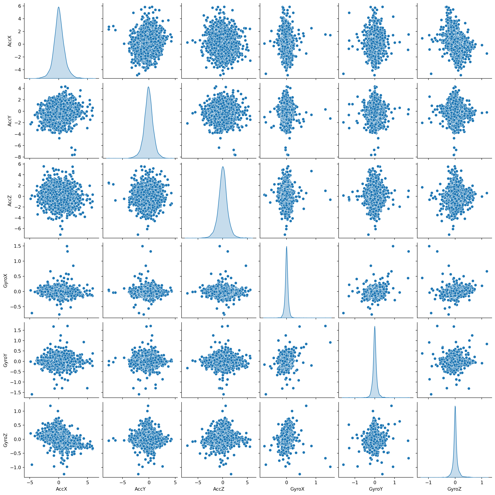
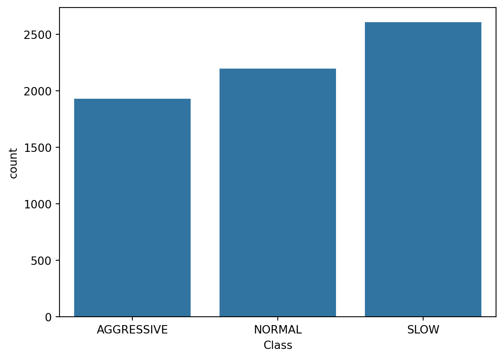
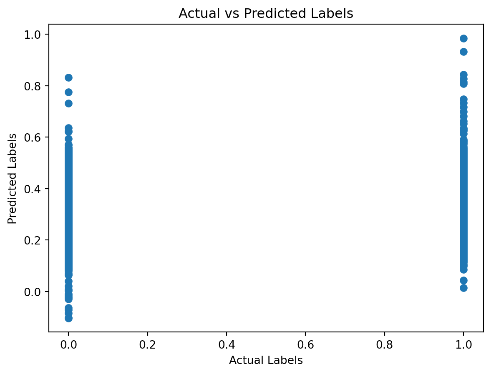

Linear and Nonlinear Regression: Predictive Analysis of Driving Behavior
Introduction
Predictive analysis has become a cornerstone in various fields, including transportation and automotive safety. At the heart of this analysis lies the ability to predict future outcomes based on historical data. In the realm of driving behavior, predictive analysis opens the door to understanding and anticipating a driver’s actions, which can be crucial for enhancing road safety, improving vehicle design, and tailoring driver assistance systems.
In this blog, we delve into the fascinating world of predictive analysis of driving behavior. We utilize a rich dataset available on Kaggle, which provides a detailed collection of driving data. This dataset includes several key features:
Acceleration: Measured across the X, Y, and Z axes in meters per second squared (( ^2 )), these values provide insight into the forward, lateral, and vertical movements of the vehicle.
Rotation: Also across the X, Y, and Z axes but measured in degrees per second (( )), offering a perspective on how the vehicle is turning or tilting.
Classification Labels: Each data point is tagged with labels such as SLOW, NORMAL, or AGGRESSIVE, giving us a qualitative assessment of the driving behavior.
Timestamps: These indicate the time at which each reading was taken, allowing us to analyze the data in a time-series context.
The overarching goal of our exploration is to employ and compare different regression models to predict driving behavior effectively. We aim to understand how well linear regression models perform against more complex, nonlinear models such as polynomial regression and Support Vector Machines (SVMs) in categorizing driving patterns into slow, normal, or aggressive. This comparison will not only highlight the strengths and limitations of each model but also provide valuable insights into the dynamics of driving behavior.
Join us as we embark on this analytical journey, where data meets the road, and predictions pave the way for understanding the nuances of driving behaviors.
Overview of the Kaggle Dataset
The dataset we’re utilizing, sourced from Kaggle, provides an extensive and detailed collection of driving data. It’s a rich dataset that captures various aspects of driving behavior through several key features:
Acceleration (X, Y, Z): These features are measured in meters per second squared (\(\text{m/s}^2\)). The X-axis typically represents forward or backward acceleration, the Y-axis indicates left or right movement, and the Z-axis captures upward or downward motion. In the context of driving, acceleration data can reveal how smoothly or abruptly a vehicle is speeding up or slowing down, which can be indicative of driving style – gentle or aggressive.
Rotation (X, Y, Z): Rotation data is measured in degrees per second (\(\text{°/s}\)). These measurements provide insights into the angular velocity around each of the three axes: roll (X-axis), pitch (Y-axis), and yaw (Z-axis). Understanding these rotational movements is crucial in analyzing maneuvers such as sharp turns, sudden lane changes, or even the stability of the vehicle on different terrains.
Classification Labels (SLOW, NORMAL, AGGRESSIVE): Each instance in the dataset is classified into one of these three categories. This classification helps in contextualizing the numerical data (acceleration and rotation) into distinct driving behaviors, making it easier to correlate specific patterns with particular driving styles.
Timestamps: The time at which each data point was recorded, typically in seconds. Timestamps are vital for time-series analysis, allowing us to track changes in driving behavior over time and identify any patterns or anomalies.
To begin our analysis, we first need to load and display a portion of the dataset. This gives us a preliminary view of the data structure and the type of information we’re dealing with. Let’s look at the code snippet that accomplishes this in a Jupyter Notebook:
import sys# !{sys.executable} -m pip install numpy!{sys.executable} -m pip install matplotlib# !{sys.executable} -m pip install scipy!{sys.executable} -m pip install scikit-learn!{sys.executable} -m pip install pandas!{sys.executable} -m pip install seabornimport pandas as pd# Load the datasetsdata_1 = pd.read_csv('motion_data_1.csv')data_2 = pd.read_csv('motion_data_2.csv')# Combine datasetsdata = pd.concat([data_1, data_2])# Display the first few rows of the datasetdata.head()
Defaulting to user installation because normal site-packages is not writeable
Requirement already satisfied: matplotlib in /Users/zimingfang/Library/Python/3.9/lib/python/site-packages (3.8.2)
Requirement already satisfied: fonttools>=4.22.0 in /Users/zimingfang/Library/Python/3.9/lib/python/site-packages (from matplotlib) (4.45.1)
Requirement already satisfied: packaging>=20.0 in /Users/zimingfang/Library/Python/3.9/lib/python/site-packages (from matplotlib) (23.2)
Requirement already satisfied: python-dateutil>=2.7 in /Users/zimingfang/Library/Python/3.9/lib/python/site-packages (from matplotlib) (2.8.2)
Requirement already satisfied: pillow>=8 in /Users/zimingfang/Library/Python/3.9/lib/python/site-packages (from matplotlib) (10.1.0)
Requirement already satisfied: pyparsing>=2.3.1 in /Users/zimingfang/Library/Python/3.9/lib/python/site-packages (from matplotlib) (3.1.1)
Requirement already satisfied: cycler>=0.10 in /Users/zimingfang/Library/Python/3.9/lib/python/site-packages (from matplotlib) (0.12.1)
Requirement already satisfied: contourpy>=1.0.1 in /Users/zimingfang/Library/Python/3.9/lib/python/site-packages (from matplotlib) (1.2.0)
Requirement already satisfied: importlib-resources>=3.2.0 in /Users/zimingfang/Library/Python/3.9/lib/python/site-packages (from matplotlib) (6.1.1)
Requirement already satisfied: numpy<2,>=1.21 in /Users/zimingfang/Library/Python/3.9/lib/python/site-packages (from matplotlib) (1.26.2)
Requirement already satisfied: kiwisolver>=1.3.1 in /Users/zimingfang/Library/Python/3.9/lib/python/site-packages (from matplotlib) (1.4.5)
Requirement already satisfied: zipp>=3.1.0 in /Users/zimingfang/Library/Python/3.9/lib/python/site-packages (from importlib-resources>=3.2.0->matplotlib) (3.17.0)
Requirement already satisfied: six>=1.5 in /Library/Developer/CommandLineTools/Library/Frameworks/Python3.framework/Versions/3.9/lib/python3.9/site-packages (from python-dateutil>=2.7->matplotlib) (1.15.0)
WARNING: You are using pip version 21.2.4; however, version 23.3.1 is available.
You should consider upgrading via the '/Library/Developer/CommandLineTools/usr/bin/python3 -m pip install --upgrade pip' command.
Defaulting to user installation because normal site-packages is not writeable
Requirement already satisfied: scikit-learn in /Users/zimingfang/Library/Python/3.9/lib/python/site-packages (1.3.2)
Requirement already satisfied: numpy<2.0,>=1.17.3 in /Users/zimingfang/Library/Python/3.9/lib/python/site-packages (from scikit-learn) (1.26.2)
Requirement already satisfied: joblib>=1.1.1 in /Users/zimingfang/Library/Python/3.9/lib/python/site-packages (from scikit-learn) (1.3.2)
Requirement already satisfied: threadpoolctl>=2.0.0 in /Users/zimingfang/Library/Python/3.9/lib/python/site-packages (from scikit-learn) (3.2.0)
Requirement already satisfied: scipy>=1.5.0 in /Users/zimingfang/Library/Python/3.9/lib/python/site-packages (from scikit-learn) (1.11.4)
WARNING: You are using pip version 21.2.4; however, version 23.3.1 is available.
You should consider upgrading via the '/Library/Developer/CommandLineTools/usr/bin/python3 -m pip install --upgrade pip' command.
Defaulting to user installation because normal site-packages is not writeable
Requirement already satisfied: pandas in /Users/zimingfang/Library/Python/3.9/lib/python/site-packages (2.1.3)
Requirement already satisfied: tzdata>=2022.1 in /Users/zimingfang/Library/Python/3.9/lib/python/site-packages (from pandas) (2023.3)
Requirement already satisfied: python-dateutil>=2.8.2 in /Users/zimingfang/Library/Python/3.9/lib/python/site-packages (from pandas) (2.8.2)
Requirement already satisfied: numpy<2,>=1.22.4 in /Users/zimingfang/Library/Python/3.9/lib/python/site-packages (from pandas) (1.26.2)
Requirement already satisfied: pytz>=2020.1 in /Users/zimingfang/Library/Python/3.9/lib/python/site-packages (from pandas) (2023.3.post1)
Requirement already satisfied: six>=1.5 in /Library/Developer/CommandLineTools/Library/Frameworks/Python3.framework/Versions/3.9/lib/python3.9/site-packages (from python-dateutil>=2.8.2->pandas) (1.15.0)
WARNING: You are using pip version 21.2.4; however, version 23.3.1 is available.
You should consider upgrading via the '/Library/Developer/CommandLineTools/usr/bin/python3 -m pip install --upgrade pip' command.
Defaulting to user installation because normal site-packages is not writeable
Requirement already satisfied: seaborn in /Users/zimingfang/Library/Python/3.9/lib/python/site-packages (0.13.0)
Requirement already satisfied: numpy!=1.24.0,>=1.20 in /Users/zimingfang/Library/Python/3.9/lib/python/site-packages (from seaborn) (1.26.2)
Requirement already satisfied: matplotlib!=3.6.1,>=3.3 in /Users/zimingfang/Library/Python/3.9/lib/python/site-packages (from seaborn) (3.8.2)
Requirement already satisfied: pandas>=1.2 in /Users/zimingfang/Library/Python/3.9/lib/python/site-packages (from seaborn) (2.1.3)
Requirement already satisfied: packaging>=20.0 in /Users/zimingfang/Library/Python/3.9/lib/python/site-packages (from matplotlib!=3.6.1,>=3.3->seaborn) (23.2)
Requirement already satisfied: python-dateutil>=2.7 in /Users/zimingfang/Library/Python/3.9/lib/python/site-packages (from matplotlib!=3.6.1,>=3.3->seaborn) (2.8.2)
Requirement already satisfied: pillow>=8 in /Users/zimingfang/Library/Python/3.9/lib/python/site-packages (from matplotlib!=3.6.1,>=3.3->seaborn) (10.1.0)
Requirement already satisfied: fonttools>=4.22.0 in /Users/zimingfang/Library/Python/3.9/lib/python/site-packages (from matplotlib!=3.6.1,>=3.3->seaborn) (4.45.1)
Requirement already satisfied: importlib-resources>=3.2.0 in /Users/zimingfang/Library/Python/3.9/lib/python/site-packages (from matplotlib!=3.6.1,>=3.3->seaborn) (6.1.1)
Requirement already satisfied: pyparsing>=2.3.1 in /Users/zimingfang/Library/Python/3.9/lib/python/site-packages (from matplotlib!=3.6.1,>=3.3->seaborn) (3.1.1)
Requirement already satisfied: kiwisolver>=1.3.1 in /Users/zimingfang/Library/Python/3.9/lib/python/site-packages (from matplotlib!=3.6.1,>=3.3->seaborn) (1.4.5)
Requirement already satisfied: contourpy>=1.0.1 in /Users/zimingfang/Library/Python/3.9/lib/python/site-packages (from matplotlib!=3.6.1,>=3.3->seaborn) (1.2.0)
Requirement already satisfied: cycler>=0.10 in /Users/zimingfang/Library/Python/3.9/lib/python/site-packages (from matplotlib!=3.6.1,>=3.3->seaborn) (0.12.1)
Requirement already satisfied: zipp>=3.1.0 in /Users/zimingfang/Library/Python/3.9/lib/python/site-packages (from importlib-resources>=3.2.0->matplotlib!=3.6.1,>=3.3->seaborn) (3.17.0)
Requirement already satisfied: pytz>=2020.1 in /Users/zimingfang/Library/Python/3.9/lib/python/site-packages (from pandas>=1.2->seaborn) (2023.3.post1)
Requirement already satisfied: tzdata>=2022.1 in /Users/zimingfang/Library/Python/3.9/lib/python/site-packages (from pandas>=1.2->seaborn) (2023.3)
Requirement already satisfied: six>=1.5 in /Library/Developer/CommandLineTools/Library/Frameworks/Python3.framework/Versions/3.9/lib/python3.9/site-packages (from python-dateutil>=2.7->matplotlib!=3.6.1,>=3.3->seaborn) (1.15.0)
WARNING: You are using pip version 21.2.4; however, version 23.3.1 is available.
You should consider upgrading via the '/Library/Developer/CommandLineTools/usr/bin/python3 -m pip install --upgrade pip' command.
AccX
AccY
AccZ
GyroX
GyroY
GyroZ
Class
Timestamp
0
0.758194
-0.217791
0.457263
0.000000
0.000000
0.000000
AGGRESSIVE
818922
1
0.667560
-0.038610
0.231416
-0.054367
-0.007712
0.225257
AGGRESSIVE
818923
2
2.724449
-7.584121
2.390926
0.023824
0.013668
-0.038026
AGGRESSIVE
818923
3
2.330950
-7.621754
2.529024
0.056810
-0.180587
-0.052076
AGGRESSIVE
818924
4
2.847215
-6.755621
2.224640
-0.031765
-0.035201
0.035277
AGGRESSIVE
818924
This code block imports the pandas library, which is instrumental in data manipulation and analysis. We then load the dataset and store it in a DataFrame data. Finally, using data.head(), we display the first few rows of the dataset to get an initial understanding of its structure and the type of data it contains. This step is crucial as it sets the stage for the subsequent data exploration and preprocessing tasks.
Data Exploration and Preprocessing
With the dataset successfully loaded and combined from two separate CSV files, we move into the critical stages of data exploration and preprocessing. This process is essential for preparing our dataset for effective model training and analysis.
Data Visualization
The first step in our data exploration is visualization. This helps us understand the distribution of our data and the relationships between different variables.
import matplotlib.pyplot as pltimport seaborn as sns# Visualizing the distributions of acceleration and rotationsns.pairplot(data[['AccX', 'AccY', 'AccZ', 'GyroX', 'GyroY', 'GyroZ']], diag_kind='kde')plt.show()# Visualizing the distribution of classification labelssns.countplot(x='Class', data=data)plt.show()


In these snippets, we utilize seaborn and matplotlib for creating insightful visualizations. The pairplot function is particularly useful for visualizing pairwise relationships in the dataset and for seeing the distribution of single variables. The countplot is used to observe the frequency distribution of the classification labels (SLOW, NORMAL, AGGRESSIVE).
Data Cleaning
The next crucial step is data cleaning, which includes handling missing values and outliers, ensuring the quality of our dataset.
# Checking for and handling missing valuesmissing_values = data.isnull().sum()data = data.dropna()
This code checks for missing values in the dataset and removes any rows containing them. Dropping missing values is one approach, but depending on the context, other strategies like imputation might be more appropriate.
Feature Engineering
Feature engineering involves creating new features or modifying existing ones to improve model performance.
# Example: Creating a total acceleration featuredata['Total_Acceleration'] = (data['AccX']**2+ data['AccY']**2+ data['AccZ']**2)**0.5
Here, we calculate the total acceleration as a new feature. This is done by computing the Euclidean norm of the acceleration components, potentially providing a more comprehensive view of the vehicle’s acceleration at any given point.
Data Normalization or Scaling
Normalization or scaling is a key step, ensuring that all features contribute equally to the model’s performance.
from sklearn.preprocessing import StandardScaler# Standardizing the featuresscaler = StandardScaler()features = ['AccX', 'AccY', 'AccZ', 'GyroX', 'GyroY', 'GyroZ', 'Total_Acceleration']data[features] = scaler.fit_transform(data[features])
In this snippet, StandardScaler from Scikit-learn is used to standardize the features, an important step for many machine learning models.
Splitting the Data into Training and Test Sets
Finally, we split our dataset into training and testing sets to evaluate the performance of our models.
from sklearn.model_selection import train_test_split# Splitting the datasetX = data[features]y = data['Class']X_train, X_test, y_train, y_test = train_test_split(X, y, test_size=0.2, random_state=42)
This code uses train_test_split to divide the dataset, ensuring that we have a separate set for model testing, which is crucial for unbiased evaluation of model performance.
Through each of these preprocessing steps, from initial visualization to the final splitting of the data, we are laying the groundwork for effective and accurate predictive modeling. This thorough preparation is key to the success of our subsequent analysis.
Regression Models: An Overview
In the realm of machine learning, regression models are pivotal tools for understanding and predicting continuous outcomes. In the context of our driving behavior analysis, we focus on three types of regression models: linear regression, polynomial regression, and Support Vector Machines (SVMs). Each of these models offers unique perspectives and strengths in modeling complex relationships in data.
Linear Regression
Linear regression is perhaps the most fundamental and widely used form of regression. It assumes a linear relationship between the input variables (features) and a single output variable (target). When there is a single input variable, it is known as simple linear regression, and when multiple input variables are involved, it is termed multiple linear regression.
The model is expressed in the form of \[ Y = \beta_0 + \beta_1 X_1 + \beta_2 X_2 + ... + \beta_n X_n + \epsilon \] where ( Y ) is the dependent variable, ( X_1, X_2, …, X_n ) are the independent variables, ( _0 ) is the intercept, ( _1, _2, …, _n ) are the coefficients, and ( ) is the error term.
Linear regression is chosen for its simplicity and interpretability. It is particularly useful for understanding the strength and type of relationship between the dependent and independent variables.
Polynomial Regression
While linear regression assumes a linear relationship between the dependent and independent variables, polynomial regression extends this idea by allowing for polynomial (non-linear) relationships. This model is expressed as \[ Y = \beta_0 + \beta_1 X + \beta_2 X^2 + ... + \beta_n X^n + \epsilon \]
Polynomial regression is particularly useful in cases where the relationship between variables is not linear but still follows a specific curve. It allows for a better fit to the data compared to linear regression when the data shows non-linear trends.
Support Vector Machines (SVMs)
SVMs are typically associated with classification tasks but can be extended to regression, known as Support Vector Regression (SVR). SVR attempts to fit the best line within a threshold value, where the best line is the line that has the maximum number of points.
The rationale behind choosing SVMs for this analysis is their effectiveness in handling high-dimensional space and their capability to model complex, non-linear relationships. SVMs can be particularly powerful when the data has a clear margin of separation and is not linearly separable.
By leveraging these different models, we can gain a comprehensive view of driving behavior patterns. Linear regression serves as a starting point for understanding basic relationships, polynomial regression helps us capture non-linear trends, and SVMs provide robustness in modeling complex, high-dimensional patterns. Together, these models offer a rich toolkit for dissecting and predicting driving behaviors.
Implementing Linear Regression
With the dataset now appropriately prepared and categorical variables converted into a numerical format, we can proceed with the implementation of linear regression. Linear regression is a straightforward yet powerful tool in predictive modeling, especially useful for understanding the relationships between variables.
Preparing the Data for Linear Regression
Before we can apply linear regression, it’s crucial to ensure that our data is in the correct format. This involves encoding the categorical ‘Class’ labels and ensuring our dataframes are aligned correctly.
from sklearn.preprocessing import OneHotEncoder# Creating an instance of OneHotEncoderencoder = OneHotEncoder(sparse=False)# Reshaping the 'Class' column as it needs to be 2Dclass_labels = data['Class'].values.reshape(-1, 1)# Applying OneHotEncoderencoded_labels = encoder.fit_transform(class_labels)# Creating column names for the encoded labelsencoded_labels_columns = [f'Class_{cat}'for cat in encoder.categories_[0]]# Converting to DataFrame and resetting indexencoded_labels_df = pd.DataFrame(encoded_labels, columns=encoded_labels_columns).reset_index(drop=True)# Dropping the original 'Class' column from data and resetting indexdata = data.drop('Class', axis=1).reset_index(drop=True)# Concatenating the original DataFrame with the new one-hot encoded DataFramedata = pd.concat([data, encoded_labels_df], axis=1)
/Users/zimingfang/Library/Python/3.9/lib/python/site-packages/sklearn/preprocessing/_encoders.py:975: FutureWarning: `sparse` was renamed to `sparse_output` in version 1.2 and will be removed in 1.4. `sparse_output` is ignored unless you leave `sparse` to its default value.
warnings.warn(
Implementing Linear Regression
With our data ready, we can now implement the linear regression model.
from sklearn.linear_model import LinearRegressionfrom sklearn.model_selection import train_test_splitfrom sklearn.metrics import mean_squared_error, r2_score# Separating features and target variablefeatures = data.drop(encoded_labels_columns, axis=1)target = data[encoded_labels_columns]# Splitting the dataset into training and testing setsX_train, X_test, y_train, y_test = train_test_split(features, target, test_size=0.2, random_state=42)# Creating and training the linear regression modellin_reg = LinearRegression()lin_reg.fit(X_train, y_train)# Making predictions on the test sety_pred = lin_reg.predict(X_test)
In this code, we first isolate our features and target variables. We then split the dataset into a training set and a test set, which is essential for evaluating our model’s performance. Following this, we create an instance of LinearRegression, fit it to our training data, and then make predictions on our test data.
Evaluating the Model
After training our model, it’s important to evaluate its performance.
Mean Squared Error: 0.21244929071927454
R-squared: 0.04040366849924115
These metrics, Mean Squared Error (MSE) and R-squared, give us an understanding of the model’s accuracy and goodness of fit. MSE is the average of the squares of the errors, and R-squared represents the proportion of the variance for the dependent variable that’s explained by the independent variables in the model.
Visualization of the Regression Results
Visualizing the results can provide additional insights into our model’s performance.
# Plotting actual vs. predicted valuesplt.scatter(y_test, y_pred)plt.xlabel('Actual Labels')plt.ylabel('Predicted Labels')plt.title('Actual vs Predicted Labels')plt.show()

This plot helps us visually assess how well our predicted values align with the actual values. In an ideal scenario, we would expect the data points to fall along a diagonal line, indicating perfect predictions.
By implementing and analyzing the results of linear regression, we gain valuable insights into the patterns within our data. This sets the stage for exploring more complex models, such as polynomial regression or SVMs, which might capture nuances in the data that linear regression cannot.
Source Code
---title: "Linear and Nonlinear Regression"author: "Joanna Fang"date: "2023-11-29"categories: [ml, code, linear regression, nonlinear regression, driving, kaggle]jupyter: python3format: html: toc: true code-block-bg: "#FFFFFF" code-block-border-left: "#E83283" code-tools: source: true toggle: false caption: none---# Linear and Nonlinear Regression: Predictive Analysis of Driving Behavior {width="50%" fig-align="center"}